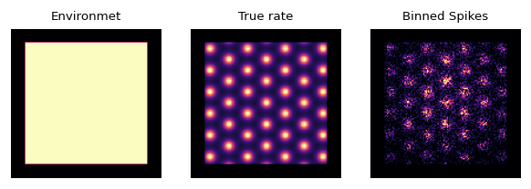
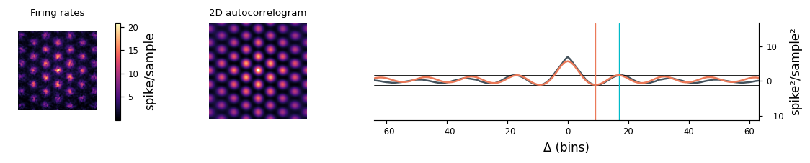

Example 0: Ground truth
In this example, we will test inference on simulated data.
Simulate a grid map with known parameters
[1]:
from pylab import *
import sys
sys.path.append('../')
from lgcpspatial.simulate import simulate_data
from lgcpspatial.plot import *
L = 128 # Grid size
P0 = L/8 # Grid spacing
α = 0.5 # Grid "sharpness"
μ = 10**5/L**2# Mean firing rate (spikes per sample)
pad = 0.1 # Edge padding (Avoids circular convolution wrap-around)
'''
simulate_data(L=128,P=13,α=0.5,μ=0.09)
Simulates spiking observations from a grid cell
Parameters
----------
L: Rectangular binning grid size (L×L bins)
P: Grid cell period spacing
α: Grid cell "sharpness"
μ: Mean firing rate (spikes per sample)
Returns
-------
mask : L×L binary mask of "in bounds" regions
λ0 : L×L array; "True" sampled grid firing rate
λ0_bg: L×L array; Grid firing rate corrupted by background rate variations
N : L×L array; Number of visits to each spatial bin
K : L×L array; Number of spikes recorded in each spatial bin
'''
mask,λ0,λ0_bg,N,K = simulate_data(L,P0,α,μ)
figure(dpi=120)
subplot(131); showim(mask,'Environmet' )
subplot(132); showim(λ0 ,'True rate' )
subplot(133); showim(K ,'Binned Spikes')
datasetname = ('simulated_data_L%d_P%d_α%.2f_μ%0.2f'%(L,P0,α,μ)).replace('.','p')

Heuristic parameters
Always inspect the heuristic initialization. If something goes wrong here, grid search will likely also fail.
[2]:
from lgcpspatial.util import blur, fft_acorr, radial_average, find_peaks, slog
from scipy.special import j0, jn_zeros
from lgcpspatial.estimators import kde
def guess_period_from_autocorrelation(y,exclude_radius=2,window=True):
# Estimate the period from the peaks/troughs of autocorrelatogram
# assuming ideal grid kernel (Bessel function J0)
# Exclude points close to zero lag, which may be noisy
autocorrelation = fft_acorr(y,mask,window=window)
radial_autocorr = radial_average(autocorrelation)
radial_autocorr = radial_autocorr[L//2+exclude_radius:]
peaks = find_peaks( radial_autocorr)[0]+exclude_radius
troughs = find_peaks(-radial_autocorr)[0]+exclude_radius
peak = np.min(peaks )
trough = argmin(radial_autocorr)+exclude_radius
P_trough = trough*2*pi/jn_zeros(1,1)[-1]
P_peak = peak *2*pi/jn_zeros(1,2)[-1]
P_hat = (P_peak+P_trough)/2
lo = np.min(radial_autocorr)
hi = radial_autocorr[peak-exclude_radius]
return P_trough,P_peak,P_hat,lo,hi,trough,peak
# Calculate mean rate per bin without triggering div 0 warnings
zeros = N<=0.0
N[zeros] = 1
y = float32(K/N)
y[zeros] = 0
# Mask to use with imshow
nanmask = float32(mask)
nanmask[~mask] = NaN
# Smooth slightly to prevent noisy peaks
σ = 1
ysmooth1 = blur(K,σ)/blur(N,σ)
P_trough,P_peak,P_hat,lo1,hi1,trough1,peak1 = guess_period_from_autocorrelation(ysmooth1,window=False)
autocorrelation2 = fft_acorr(ysmooth1,mask,window=False)
radial_autocorr2 = radial_average(autocorrelation2)
figure(figsize=(10,2),dpi=120)
grid = (1,4)
# Plot smoothed y
subplot2grid(grid,(0,0))
imshow(ysmooth1*nanmask)
axis('off')
title('Firing rates')
colorbar(label='spike/sample')
# Plot the autocorrelation (mask out zero lag)
subplot2grid(grid,(0,1))
u = array(autocorrelation2)
u[L//2,L//2] = NaN
imshow(u)
axis('off')
title('2D autocorrelogram')
# Plot the radial autocorrelation
subplot2grid(grid,(0,2),colspan=2)
plot(arange(L)-L/2,radial_autocorr2)
rightaxis()
xlabel('Δ (bins)')
ylabel('spike²/sample²')
ylim(10*lo1,10*hi1)
axhline(lo1,lw=0.5,color='k')
axhline(hi1,lw=0.5,color='k')
axvline(trough1,lw=0.8,color=RUST)
axvline(peak1 ,lw=0.8,color=TEAL)
μy = mean(y[mask])
μz = log(μy)
# Get location of trough and peak of ideal (bessel) autocorrelogram
# Get height of function at these locations (height at zero is 1)
# Use covariance of log-Gaussian to predict peak heights
# Get the ratio of these peak heights to use in calibration
# Iterate to guess the scale
observed = hi1-lo1
s = 1
for iters in range(10):
μz = log(μy)-s/2
v1,v2 = (exp(j0(jn_zeros(1,2))*s) - 1) * exp(2*μz + s)
s = s * observed/(v2-v1)
# Plot calibrated "ideal grid" kernel (exponentiated)
# This uses the moments of the multivariate log-Gaussian
x = arange(L)-L/2
Σ = j0(x*2*pi/P_hat)*s
expΣ = (exp(Σ)-1)* μy**2
plot(x,expΣ-np.min(expΣ) + lo1)
tight_layout()
# Precompute variables; Passed as globals to jac/hess
fgσ = P_hat/pi # In units of linear-bins
bgσ = fgσ*5 # In units of linear-bins
λh = kde(N,K,fgσ,mask,rho=1e-9,gamma=0) # KDE estimated rate
λbg = kde(N,K,bgσ,mask,rho=1e-9,gamma=0) # Background rate
lλh = slog(λh) # Log rate
μz = slog(λbg) # Log background
z0 = lλh - μz # Foreground log rate
# Initial guess for kernel height
# Standard kernel normalized to zero-lag autocorrelation = 1
# s and σ0 should be similar, they both scale the Bessel autocorrelation of the log-rate
σ1 = var(z0[mask])
σ0 = s
print('Period (bins) estimated from trough:',P_trough)
print('Period (bins) estimated from peak: ',P_peak)
print('Period (bins) average: ',P_hat)
print('True period: %s'%P0)
print('Heuristic period: %s'%P_hat)
print('True log-variance: %s'%var(slog(λ0)[mask]))
print('Scale (variance): %s'%σ1)
print('Scale (Bessel): %s'%σ0)
Period (bins) estimated from trough: 14.758091618797616
Period (bins) estimated from peak: 15.225262725584749
Period (bins) average: 14.991677172191181
True period: 16.0
Heuristic period: 14.991677172191181
True log-variance: 0.3835029
Scale (variance): 0.09504333
Scale (Bessel): 0.5104032249918229

Infer rate map using heuristic parameters
[3]:
from lgcpspatial.loaddata import Dataset, Arena
from lgcpspatial.lgcp2d import DiagonalFourierLowrank, coordinate_descent
P = P_hat
data = Dataset.create_posthoc(L,N,y,lograte_guess=μz)
data.arena = Arena.from_mask(mask)
data.position_sample_rate = 1 # Hz, but this is fictional for simulated data
data.scale = .5 # 1/Meters, but again: fictional
model = DiagonalFourierLowrank(σ0,P,data)
fit = coordinate_descent(model,tol=1e-6) # (μh,v,vfe)
inference_summary_plot(model,fit,data,datasetname);
Identify optimal parameters via grid search
See example 3 optimize hyperparameters.ipynb for more details.
[ ]:
from lgcpspatial.gridsearch import grid_search
modelargs = {
'L':L,'n':N,'y':y,
'lograte_guess':z0,
'prior_mean':μz,
}
def evaluate_ELBO(parameters,state):
global modelargs
p,β = parameters
model = DiagonalFourierLowrank(σ0/β,p,**modelargs)
μ,v,μh = (None,)*3 if state is None else state
μ0 = None if μ is None else model.F@μ
Σ0 = None if v is None else v*0.5
μh,v,nl = coordinate_descent(model,μ0,Σ0)
μ = model.F.T@μh
state = μ,v,μh
ELBO = -nl
return state, ELBO, model
# Prepare hyperparameter grid
rP = 2 # Range (ratio) to search for optimal period
rβ = 10 # Range (ratio) to search for optimal kernel height
NP = 101 # Period search grid resolution
Nβ = 101 # Kernel height search grid resolutions
Ps = float32(exp(linspace(log(P/rP),log(P*rP),NP)))
βs = float32(exp(linspace(log(1/rβ),log(1*rβ),Nβ))[::-1])
pargrid = [Ps,βs]
# Run overall grid search
result = grid_search(pargrid,evaluate_ELBO)
bestindex,bestpars,bestresult,allresults,pargrid = result
print('')
print('Heuristic parameters')
print('P = %f'%P)
print('σ² = %f'%σ0)
print('')
print('Optimized parameters:')
print('P = %f'%bestpars[0])
print('σ² = %f'%(σ0/bestpars[1]))
print('')
print('True parameters:')
print('P = %f'%P0)
print('σ² = %f'%var(slog(λ0)[mask]))
[49,43](1.48e+01,1.38e+00) loss=2.291628e+04
Infer rate map at optimized parameters
[ ]:
P_use = bestpars[0]
σ0_use = σ0/bestpars[1]
model = DiagonalFourierLowrank(σ0_use,P_use,dc=1e6,**modelargs)
fit = coordinate_descent(model,tol=1e-6)
inference_summary_plot(model,fit,data,datasetname);
Check accuracy of inferred rates relative to ground truth
[ ]:
μh,v = fit[:2]
pz = (model.F.T@μh).reshape(L,L)+μz
μλ = exp(pz+v.reshape(L,L)/2)
mλ = exp(pz)
λ = λ0_bg
def square_limits(limit):
xlim(*limit)
ylim(*limit)
plot(limit,limit,color='r',lw=0.5)
force_aspect()
nicexy()
xlim(*limit)
ylim(*limit)
figure(0,(4,2),140)
subplot(121)
scatter(λ[mask], μλ[mask], lw=0, s=1)
simpleaxis()
xlabel('True rate')
ylabel('Inferred rate')
square_limits([0,25])
z = slog(λ)
subplot(122)
scatter(z[mask], pz[mask], lw=0, s=1)
simpleaxis()
xlabel('True log-rate')
ylabel('Inferred log-rate')
square_limits([-1,4])
tight_layout()